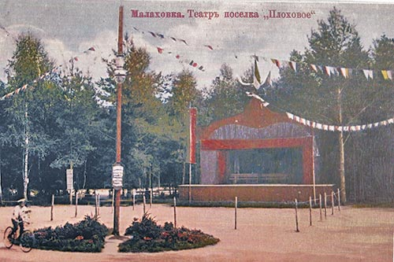
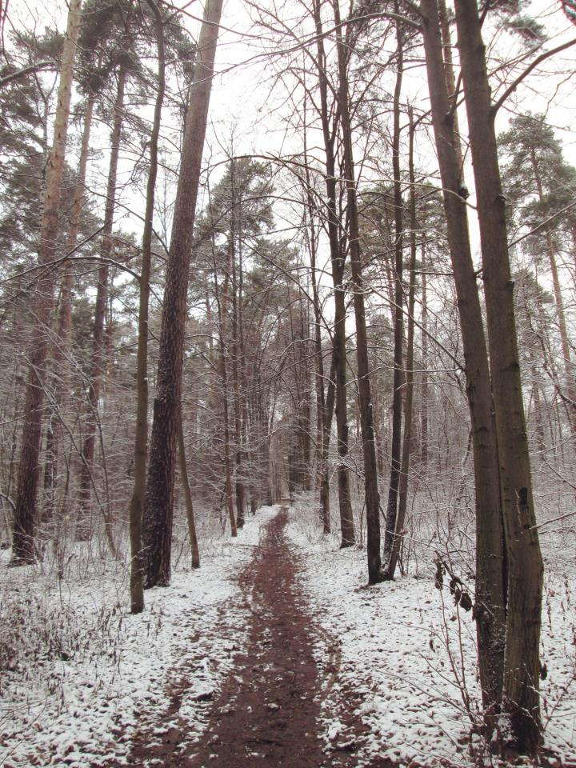

Плоховое
Плоховое – это живописный уголок леса в Малаховке.
Имеет давнюю историю, его название уходит корнями как минимум в XVIII век. Местность принадлежала прежде Николо-Угрешскому монастырю, но в годы правления Екатерины II, как и многие монастырские земли, была изъята в казну. В 1766 – 1767 годах землемер Муравьёв произвёл генеральное межевание нашей местности.
В начале ХХ века Плоховое – это по-прежнему государственная земля, «государственная дача», граничившая с владениями супругов Н. Д. и Е. А. Тeлешовых.
C 1904 года представлял собой отдельный дачный посёлок, где соблюдался порядок в соответствии с действующим «Уставом общества благоустройства посёлка Плоховое в лесной даче государственных имуществ близ станции Малаховка Московско-Казанской железной дороги Московской губернии Бронницкого уезда». К поездам подавались повозки, запряжённые лошадьми, из хозяйства Фёдора Ивановича Шпигеля (одного из первых застройщиков Малаховки), чтобы дачникам не нести тяжёлую поклажу в руках. На пересечении улиц Республиканской и Центральной был артезианский колодец с хорошей питьевой водой. На Центральной улице – продовольственные палатки. Молоко, творог, сметану, яйца, зелень, землянику, чернику, малину привозили с доставкой на дом. У каждого дома были свои поставщики продуктов.
В 1904 году Плоховое объединено с другими частями нынешней Малаховки.
В начале ХХ века, на волне всеобщей любви к театральному искусству, свой театр был и в Плоховом, на лесной поляне. Это было ещё одно место отдыха дачников. Там проходили спектакли, дачные праздники, вечера. Сохранилась фотография театра и одна афиша: «13 июня 1910 года. Парк «Плоховое», спортивные соревнования, детский праздник, танцы, бал». Детский праздник проводился на кругу в центре парка. Начало в 3 часа дня. Программа праздника весьма обширна: игры, танцы, шествие детей по программе, одобренной директором гимназии С. В. Зенченко. На детском празднике играл духовой оркестр, продавались прохладительные напитки, сладости. А главное – весёлые игры! Но это было всё днём. А вечером, в половине восьмого – концерт. По окончании концерта – бал. Распорядителем бала был артист императорских театров г-н Бычков.
Звучали два оркестра: один – струнный, второй – военный, 1 лейб-гвардии Екатерининского императорского Александра полка. Театр в Плоховом не сохранился до наших времён.
В первые годы советской власти придавалось должное значение охране общественного порядка в посёлке – вводилась для этого трудовая повинность, которая лишь немногим уступала военной обязанности. В соответствии с этими правилами Малаховка была разделена на 12 охраняемых секторов, пять из них находились в южной части посёлка, а семь – в северной. В третий и четвёртый секторы входили первое и второе «Плоховое» и ещё какое-то «Моховое», вероятно, болото в долине реки Македонки.